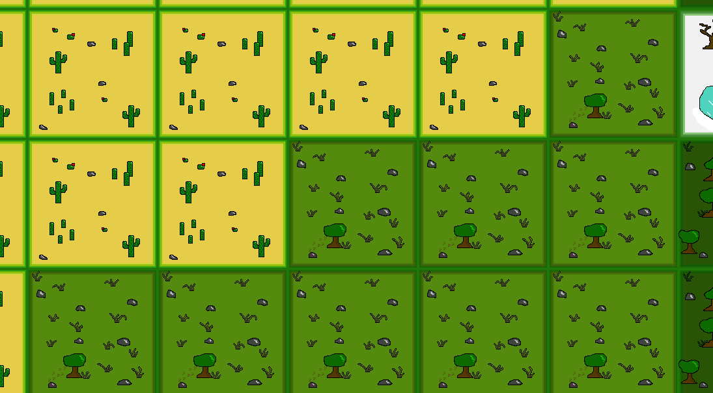

Introduction
I am a first-year Computer Science student at Georgia Tech. My threads - or concentrations of study - are currently Systems and Architecture and Intelligence. I've been programming since I was in sixth grade, and really enjoy the novel creativity that programming enables me to express. I've spent two summers at the University of Southern California doing encryption programming for their MediaQ project and also worked with Helpmate to develop a systems security manual to benefit domestic abuse victims. In my spare time, I enjoy reading and am currently foraying into music production.
Featured Project: Nation Rising Rework
My first collaborative programming project ever was a game inspired by Civilization II. I developed it alongside a friend of mine over a three-day weekend without access to the internet, and though the coding style was somewhat horrifying, it worked and was actually fairly fun. I've recently begun a project to recreate this game using correct code practices and an actual game engine (as opposed to the one we homebrewed for the original). I've elected to use Java alongside the libGDX game engine. Pictured is above is an example of the heatmap-based procedural map generation I created for the game, which was extremely enjoyable to learn the math behind and then implement. I'm looking forward to recreating the remainder of the game in a way that I can be proud of.